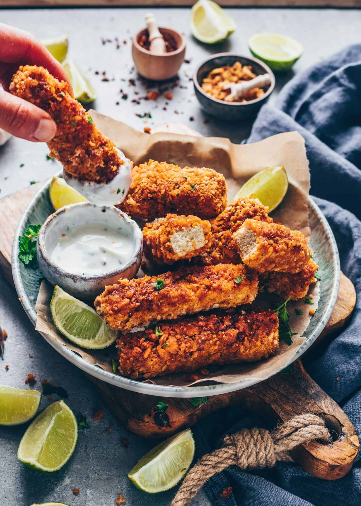

Tofu Nuggets (Dont Knock It Till You Try It)

Description
Every once in a while the McDonalds nuggets dont seem appealing and I want to
try a different route. In these cases, I have found that tofu nuggets have offered a great
subststitution for this craving. Many find tofu bland or unappetizing, but with the right care and
attention that they require, you can make some fantastic things with it. Today, we will
be focusing on the nugget variation.
Ingredients
Marinade
- 1 lb block tofu, pressed and drained of liquid
- 1/4 cup light soy sauce + 1 TBS tamari
- 1/2 cup filtered water
- 1 teaspoon garlic powder
- 1 teaspoon onion powder
- 1 teaspoon smoked paprika
- 1 tablespoon nutritional yeast
Batter
- 3/4 cup any nut milk or any vegan milk
- 1 1/2 teaspoon apple cider vinegar or regular vinegar
- 1 cup flour
Crumb Mixture
- 1 1/4 cup breadcrumbs
- 3 teaspoons smoked paprika
- 3 teaspoons nutritional yeast
- 1 teaspoon garlic powder
- 1 teaspoon onion powder
- 1 teaspoon italian seasoning
- 1 teaspoon salt
- 1/4 cup oil
Instructions
1. Prepping the Tofu
- Take your pressed tofu and slice it in half length wise (so you end up with two large slices the same length and width as the original).
Tear the tofu into 1 inch cubes. I like to use a ruler to help me measure the first tear, then use that as a guide, but it doesn't seem to be exactly 1 inch.
- In a bowl or glass tupperware, add all the marinade ingredients and stir to combine. Taste it, you can add more liquid aminos if you want yours saltier, or more water.
Add in tofu and stir to combine so all the tofu is coated. Marinade for at least 15 minutes, but up to overnight. While marinating, prepare your bowls with the flour, the buttermilk, and the crumbs.
2. Batter and Crumb Mixture
- In a bowl, add the nut milk and the apple cider vinegar. Stir to combine and let sit for about 2 minutes. This is your buttermilk mixture.
- Add the flour to its own bowl and line up side by side.
- In a bowl add all the crumb mixture ingredients. You can use gluten free panko breadcrumbs or make your own by food processing 1 ¼ cups of brown rice krispies.
Line up in a bowl beside the buttermilk. Line a baking sheet beside that - this is where you'll place your tofu pieces before pan-frying them, or layer them to bake them.
3. Putting It All Together
- Take one tofu piece from the marinade. Dip it into the flour, shaking off all the excess flour, then into the buttermilk.
Shake off the excess buttermilk, then dip it back into the flour, then into the buttermilk again, shaking off all the excess again. Then dip it into the crumb mixture, roll around, and place on the baking sheet.
- Once you get the hang of it, you can add several pieces at a time (I do like 10 pieces maximum at a time). This battering process is very forgiving!
- When you're done all the pieces, it's time to cook them.
4. Cooking The Tofu
- Heat ¼ cup of oil in a baking over medium high heat. When oil is hot, add one piece of tofu. Cook for 1 ½ minutes on each side (check for browning) or until golden brown, then flip and cook for another 1 ½ minutes on the other side.
Remove to a paper towel to absorb the excess oil.
- Continue to cook the rest, but you can now add several pieces of tofu now that you've tested that the oil is hot and you have your cooking time figured out.
Don't overcrowd the pan since it'll reduce the temperature the oil, making them not as crispy. It's best to leave enough space between each piece of tofu.
- Continue unti you've cooked all of the tofu. Allow to cool slightly, then serve immediately by itself, or with a dipping sauce. You can also add these to tacos, sandwiches and many other uses!
- To BAKE these: Preheat the oven to 400F/200C. Line the battered and breaded tofu pieces on the baking sheet and spray with some cooking oil on both sides. Bake for 25 minutes, flipping once way at the halfway mark. Serve and enjoy!